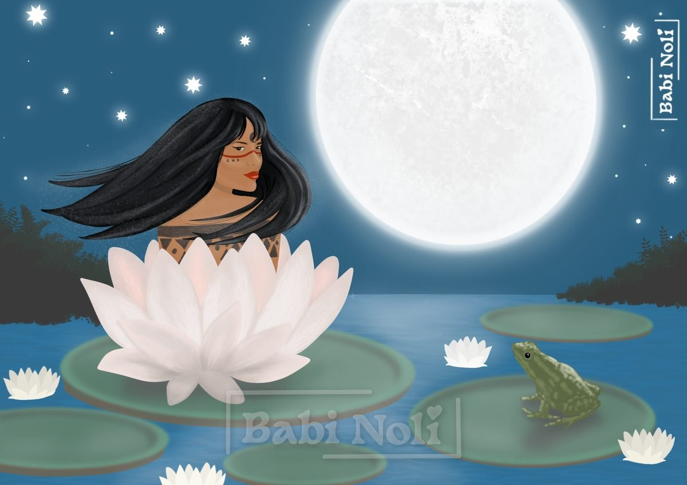
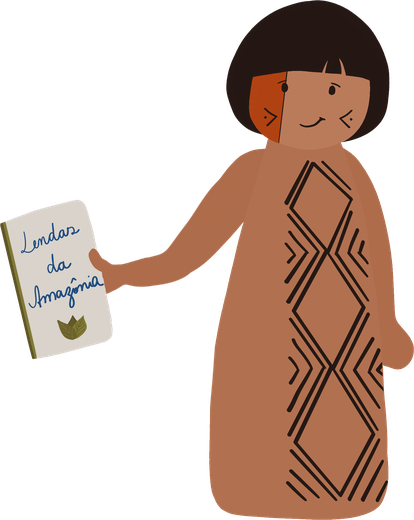

The Vitória-régia


Vitória-régia (“Royal Victoria”) is the European name given to a water plant whose beautiful flowers open in the moonlight. In Guarani, it is called irupé.
Legend has it that Jaci, the Moon goddess, picked the most special young women of the villages to be her chosen ones. They were blessed with a kiss of light and went on with their lives, illuminated by Jaci. Some were even taken away by her, thus transcending the physical body.
There was, however, in a very distant village, a beautiful young woman named Naiá, with long black hair. Naiá was a vain and dreamy girl who felt special. She believed she had a great purpose in life. She was certain that one day she would be chosen by Jaci.
Any resemblance to Narcissus here is purely coincidental, but there’s no ignoring the young woman’s ego.
She began to chase the Moon wherever it went, fascinated by the idea of being chosen and going beyond the flesh, rising to the heavens with Jaci.
Naiá spent her nights searching tirelessly for the Moon; she no longer felt hunger or sleepiness. One day, exhausted from searching for the Moon, she came to a lake and saw the reflection of a large, shining white ball. Thinking she was seeing the Moon itself, she instinctively threw herself into the lake, diving down to touch it.
As she dove, she realized she could no longer see the Moon’s reflection and tried to swim back to the surface. But she couldn’t: her legs were caught in water plants at the bottom of the lake. She tried to free herself and thrashed among the plants, but it was all in vain; she was already weak and tired.
Naiá was out of breath, almost drowning, when Jaci, seeing the tragic end of the dreamy young woman who wanted to transcend more than anything in the world, decided out of compassion to save her.
Jaci went down to the bottom of the lake and, with a luminous kiss, saved her, turning her into a star of the waters and thus giving her eternal life.
Naiá’s spirit transcended the body, just as she had longed for. She became Irupé and lives in every irupé flower that blooms. And with every birth and rebirth, she gets ready to meet the Moon again: she makes herself beautiful and fragrant and opens up all in white to receive the moonlight. Her love is renewed with every moonlit night, and the white of the petals gives way to a soft pink, symbolizing her happiness at being united with Jaci once again.
Translated from Portuguese with AI. The original text is mine.
Did you know?
The color change at the end of the story really happens: the vitória-régia flower opens white on the first night and turns pink on the second.
The white flower warms up and gives off a sweet, pineapple-like scent that attracts the beetles that pollinate it.
The round leaves, with their upturned edges, can reach about 3 meters in diameter.
The scientific name of the genus, Victoria, honors Queen Victoria of the United Kingdom.
In 2022, scientists at the Royal Botanic Gardens, Kew, in London identified a new giant species, Victoria boliviana, which had spent more than 180 years in the herbarium under the wrong name. Its leaves reach 3.2 meters across.